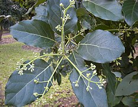
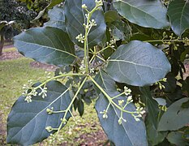

საქართველოს მცენარეთა სამყარო მდიდარი და მრავალფეროვანია. საკმაოდ ხანგრძლივი და საინტერესოა საქართველოს ფლორის განვითარების ისტორია. ძალიან ღარიბია მონაცემები პალეოგენში საქართველოს ადგილას არსებული იაფეტიდის და ტეთისის სხვა კუნძულების მცენარეულობის შესახებ. მესამეულ პერიოდში საქართველოს ფლორა ტროპიკული მცენარეულობის სახის და ძირითადად მარადმწვანე იყო. კლიმატის აცივებასთან ერთად, ტროპიკული მცენარეულობა ჯერ სუბტროპიკულით, ხოლო შემდგომ ზომიერი კლიმატური სარტყლისათვის დამახასიათებელი ფლორით იცვლებოდა. საქართველოს ტერიტორიაზე მეოთხეულ გამყინვარებას ცივი ქვეყნების ფლორის ცალკეულ წარმომადგენელთა შემოჭრა მოჰყვა. რელიეფისა და მცენარეული საფრის ცვლილება ბოლო ათეული მილიონი წლის განმავლობაში ძალიან რთულად მიმდინარეობდა. საქართველოში გვხვდება 4200-დან 4500-მდე უმაღლესი მცენარეთა სახეობა, რომელთაგან 380 საქართველოს ენდემია (9%). აქედან 600 (14,2%) სახეობა კავკასიის ენდემებს განეკუთვნება.
 

საქართველოს წითელ წიგნში შეტანილია მცენარეთა 150-ზე მეტი სახეობა. საქართველოს ბუნებრივი ფლორის ინვენტარიზაცია ასახულია კაპიტალურ 16-ტომიან გამოცემაში „საქართველოს ფლორა“ (1971–2011). საქართველოში შესწავლილია რაჭა-ლეჩხუმის, სვანეთის, არაგვის ხეობის, მესხეთის, თრიალეთის, კახეთის, აჭარის, აფხაზეთის ფლორა, მათი სისტემატიკური სტრუქტურა, ბოტანიკურ-გეოგრაფიული თავისებურებანი; ჩატარდა ფლორის ანალიზი.
| პერიოდი | პირველი ფესვი | პირცელი ფოთოლი | ზრდა | გარდაქმნა | ყვავილობა | მწიფობა | ჩარეცხვა |
|---|---|---|---|---|---|---|---|
| FLORA MICRO | 0.2mL/L | 0.6mL/L | 1.5mL/L | 1.5mL/L | 0.7mL/L | - | - |
| FLORA GRO | 0.2mL/L | 0.6mL/L | 1mL/L | 1.5mL/L | 1.5mL/L | - | - |
| FLORA BLOOM | 0.2mL/L | 0.6mL/L | 0.5mL/L | 1mL/L | 1.5mL/L | 2.1 | - |